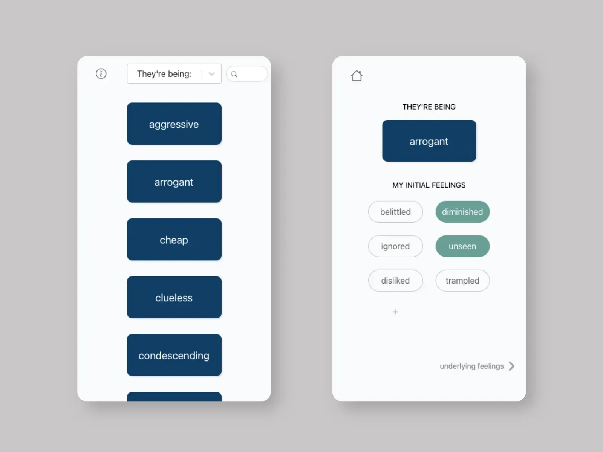

self-empathy app

self-empathy app
Guides users on a self-empathy process to understand and accept their own emotions, thoughts, and experiences with kindness, compassion, and non-judgment. The app uses Nonviolent Communication (NVC) principles, which focus on expressing oneself in an honest, clear, and compassionate way while also listening to others with empathy and understanding. The app helps users identify and articulate their initial and underlying feelings, as well as their needs, which can lead to better emotional regulation, stress management, and healthier choices.